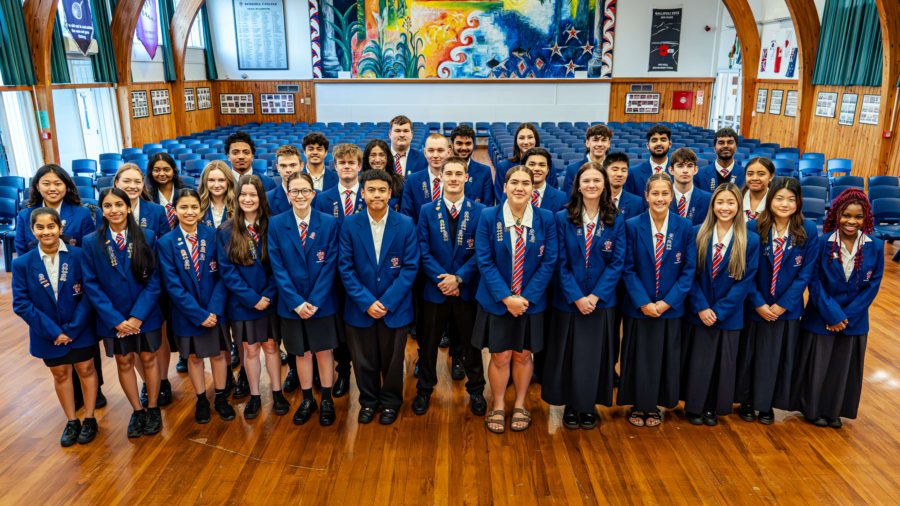

Theana Chen 来自中国，三年前只身来到奥克兰南部的 Rosehill College。
她说，第一天到校，让她决定留下来的，不是课程安排，不是硬件设施——
「是同学主动走过来和我说话的那一刻。」
— Theana Chen，来自中国，在校三年
三年后，Theana 成了 Rosehill 的 International Student Leader（国际学生领袖）。她的职责，是帮助每一个像她当年那样刚抵达新环境的留学生适应新生活——做那个主动走过去的人。

Rosehill College 学生领袖团队，Papakura, Auckland
「最有意思的部分是——我认识了来自完全不同文化背景的朋友」
担任国际学生领袖这个角色，让 Theana 获得了大量与不同背景的人沟通的经验，她说自己在与人交流时变得更加自信。
很多家长会问：孩子一个人去新西兰读中学，会不会很孤独？Theana 的答案是——看你去的地方，也看你愿不愿意走出去。
Rosehill 的 House 制度（六个学院：Atawhai、Kahurangi、Manutaki、Pounamu、Rangatahi、Taikura）让每个学生从入学第一天就属于一个小集体。学校还有 Kapa Haka 毛利传统表演队、艺术节、多支体育竞技队，社交切入点很多。
关于 Rosehill College
📍 位于新西兰奥克兰南部帕帕库拉，Year 9-13 公立综合中学，创建于1970年
✅ 专职国际学生办公室，可用中文沟通，全程关怀支持
✅ 寄宿家庭由学校审核安排，符合新西兰《2021年教育关怀法规》
✅ NCEA 学历，获全球主要大学认可

Rosehill College 校园生活
正在为孩子考虑新西兰中学的家庭，欢迎通过以下方式咨询：
📧 inquiries@rosehillcollege.school.nz
📞 +64 9 295 0661
🌐 rosehillcollege.school.nz